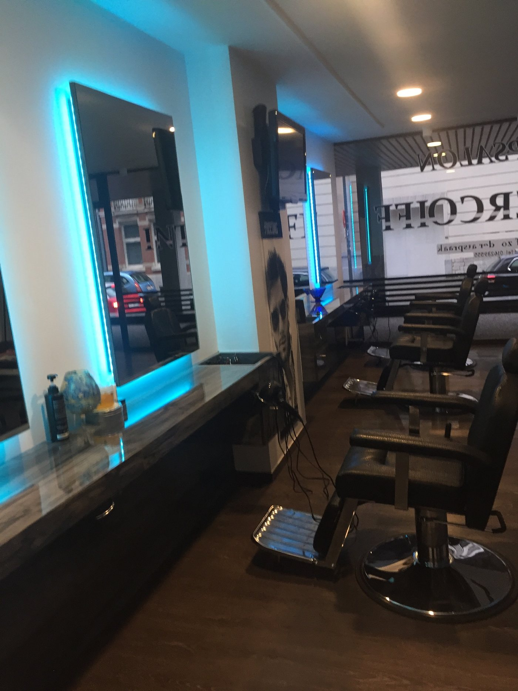
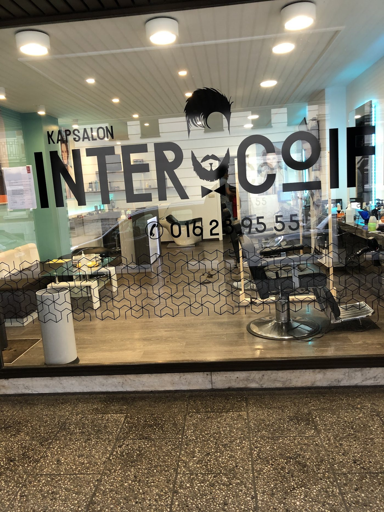

Knippen heren
Klassiek met de schaar of kort met de tondeuse — afgewerkt zoals jij het wil.
Al jaren de vaste kapper van heel wat Leuvenaars. Vakkundig, vriendelijk en aan een prijs waar je niet van schrikt. En de koffie staat klaar.

Klassiek met de schaar of kort met de tondeuse — afgewerkt zoals jij het wil.
Skin, low, mid of high: strak uitgelopen en netjes afgelijnd.
Trimmen, in model brengen en scherpe contouren.
Ook de jongste klanten zijn welkom — rustig en geduldig geknipt.
Even opfrissen en de juiste producten voor thuis.
Prijzen: vraag ze gerust in de zaak of aan de telefoon — onze klanten noemen ons een van de voordeligste kappers van Leuven.

Wie bij Inter-coiff binnenstapt, krijgt eerst een kop koffie aangeboden. Daarna gaat het over jouw haar: wat je wil, hoe je het draagt, hoeveel eraf mag. Geen haast, wel vakwerk — daarom komen veel klanten hier al sinds 2015 of langer.
“Ik kom hier al jaren. Kwaliteit-prijsverhouding is zeer optimaal, daarbovenop krijg je nog eens een excellente service. Dikke aanrader!”
“Eerste keer dat ik hier kwam was in 2015. Meteen vroegen ze of ik een tas koffie wou. Vandaag nog steeds mijn vaste kapper! 10/10”